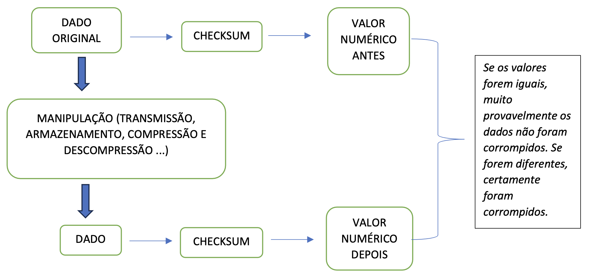

Introdução ao Checksum
Neste projeto, serão adicionadas novas funcionalidades ao protocolo em desenvolvimento, sendo uma delas o checksum.
O checksum (ou soma de verificação) é um valor numérico gerado a partir de um conjunto de dados, utilizado para verificar a integridade dessas informações.
Esse valor é obtido por meio de uma função hash ou algoritmo matemático, resultando em um identificador único baseado no conteúdo original.
Caso os dados sejam alterados, o checksum calculado será diferente, evidenciando que houve modificação, seja ela intencional ou acidental.
No contexto de transmissão de dados, a função hash é aplicada aos dados originais, e o valor gerado é transmitido junto com eles.
No lado receptor, a mesma função é aplicada novamente sobre os dados recebidos, e o valor obtido é comparado com o checksum enviado pelo transmissor.
Como Funciona
- Geração do checksum: um algoritmo específico (ex.: MD5, SHA-256, CRC32) processa os dados e gera um valor fixo.
- Transmissão ou armazenamento: o dado e seu checksum são enviados ou armazenados juntos.
- Verificação: o receptor recalcula o checksum a partir dos dados recebidos e compara com o original.
- Se os valores coincidirem, os dados provavelmente estão intactos.
- Se forem diferentes, houve alteração ou erro no processo.
Aplicações Comuns
- Verificação de integridade de arquivos: validar se um arquivo baixado não foi corrompido.
- Transmissão de dados: proteger contra erros em redes de comunicação.
- Segurança: detectar alterações não autorizadas em arquivos.

Principais Algoritmos
Diversos algoritmos podem ser utilizados como checksum, atribuindo um valor numérico a um conjunto de dados.
A tabela a seguir apresenta alguns exemplos comuns:
| Algoritmo | Bits (valor gerado) | Aplicação principal |
|---|---|---|
| CRC32 | 32 | Redes, compressão de arquivos (ZIP, RAR) |
| MD5 | 128 | Verificação de arquivos (obsoleto para fins de segurança) |
| SHA-1 | 160 | Git, certificados digitais (inseguro para criptografia) |
| SHA-256 | 256 | Segurança, Blockchain, SSL/TLS |
| BLAKE2 | 256+ | Alternativa rápida ao SHA-2 |
| Adler-32 | 32 | Checksum simples (mais rápido que CRC32, porém menos seguro) |